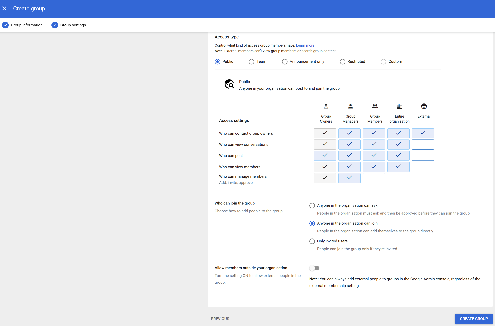
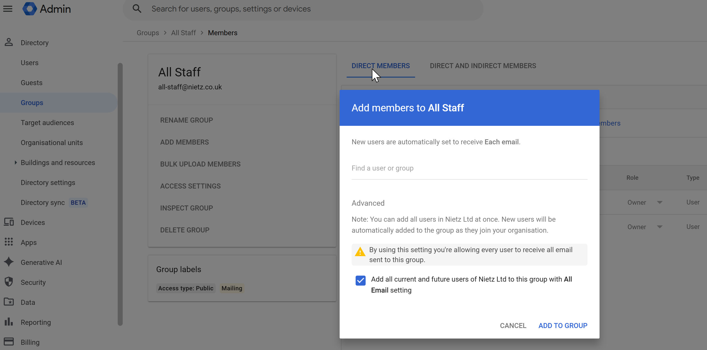
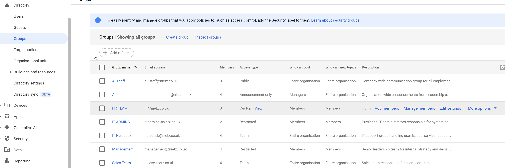

Overview
This section demonstrates how Google Groups were configured to support
both communication and role-based access control (RBAC).
Groups allow permissions and policies to be applied at scale, reducing
the need to manage access at an individual user level.
Key concept:
Assign permissions to groups, not users — this is essential for scalable
and maintainable environments.
Group Configuration (Access Control)
Groups were configured with different access types depending on
their purpose and security requirements.

Example group configuration showing access controls and permissions
- Public (internal) – Open collaboration within the organisation
- Team – Department-level communication
- Announcement-only – One-way communication from leadership
- Restricted – Sensitive or privileged access groups
These access types balance usability with security, ensuring the right
level of visibility and control for each group.
Membership Management
Users were assigned to groups based on their department and role
within the organisation.

All Staff group membership including all organisational users
The All Staff group includes all users, enabling
organisation-wide communication and announcements.
- Manual membership assignment for controlled groups
- Dynamic inclusion of all users for global groups
- Support for both direct and inherited group membership
Groups Overview
Multiple groups were created to reflect organisational structure
and communication requirements.

Overview of all configured groups in the environment
- All Staff
- Announcements
- HR Team
- IT Admins
- IT Helpdesk
- Management
- Sales Team
Access Design (RBAC Implementation)
Groups were used as an abstraction layer for access control,
allowing permissions to be assigned at a group level rather than
per user.
Examples
- HR Team → Restricted due to sensitive employee data
- IT Admins → Highly restricted privileged access
- Announcements → One-way communication channel
- All Staff → Organisation-wide messaging
Why this matters:
Using groups for access control significantly reduces administrative
overhead and ensures consistent permission enforcement.
Design Approach
- Implemented scalable access control using groups
- Centralised permission management
- Separated communication and security roles
- Aligned groups with organisational structure
Summary
- Configured Google Groups for communication and collaboration
- Implemented RBAC using group-based permissions
- Assigned users based on roles and departments
- Applied security-focused group configurations
Groups provide a flexible and scalable foundation for managing both
communication and access control across the organisation.